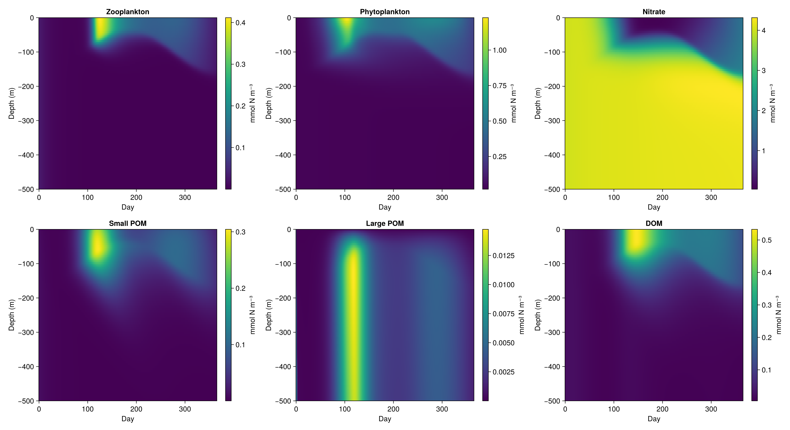
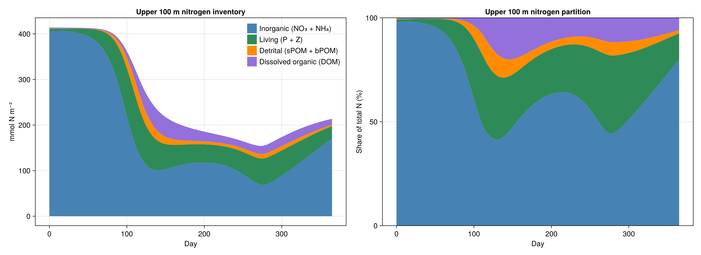
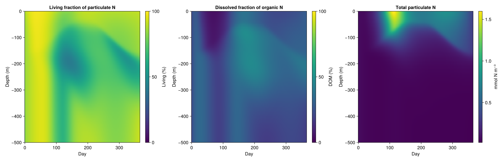
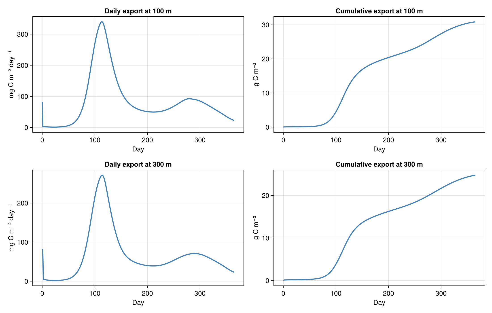
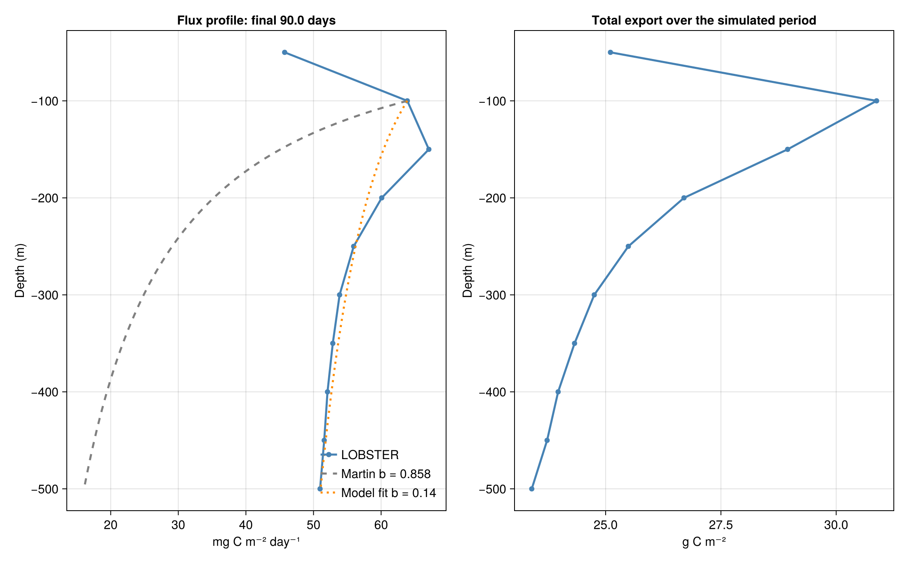

Run a reference LOBSTER column
We begin with one idealised ocean column. This is the reference simulation for the workshop: we construct a LOBSTER ecosystem, provide seasonal light and mixing, and examine the evolving tracer structure and particulate carbon export.
From the repository root:
julia --project=oceanbiome workshop/01_OceanBioME/00_reference_column.jlThe simulation runs a full 365-day seasonal cycle.
Load OceanBioME and Oceananigans
using OceanBioME, Oceananigans, CairoMakie
using Oceananigans.Units
import MASTSWorkshop
using MASTSWorkshop: results_directory, diagnose_column, write_diagnostics, write_export_profile,
plot_vertical_evolution, plot_nitrogen_partition, plot_living_fraction,
plot_reference_export, plot_export_profile, plot_idealised_physicsDefine the water column
The prepared BATS-like environment supplies the 500 m grid, 30-minute time step, initial concentrations, light and vertically implicit mixing.
grid, time_step, initial, closure, surface_PAR = MASTSWorkshop.column(:BATS)Construct the biological model
PhytoZoo defines phytoplankton and zooplankton processes. The seven-tracer LOBSTER model then combines them with nutrients and dissolved/particulate organic matter. The grazing rate is our reference value of 0.8 per day.
plankton = PhytoZoo(; nutrient_half_saturations = (nitrate = 0.7, ammonia = 0.001),
maximum_grazing_rate = 0.8 / day)
biogeochemistry = LOBSTER(grid; plankton, surface_PAR, scale_negatives = true)Couple biology to the water column
NonhydrostaticModel is an Oceananigans constructor. The prescribed vertical diffusivity mixes the seven tracers through the water column.
model = NonhydrostaticModel(grid; closure, biogeochemistry)
set!(model; initial...)Run and save the simulation
The output includes daily tracer profiles and diagnostics of sinking organic-carbon export at 100 m and 300 m. Both depths coincide with grid faces. Profiles are saved daily throughout the year.
output_dir = results_directory("reference_column")
simulation = Simulation(model; Δt = time_step, stop_time = 365days)
filename = joinpath(output_dir, "reference_column.jld2")
simulation.output_writers[:profiles] = JLD2Writer(model, model.tracers;
filename,
schedule = TimeInterval(1day),
overwrite_files = true)
run!(simulation)
diagnostics = diagnose_column(filename, model)
write_diagnostics(joinpath(output_dir, "reference_diagnostics.csv"), diagnostics)
write_export_profile(joinpath(output_dir, "reference_export_profile.csv"), diagnostics)
println("Reference: final surface phytoplankton = ", last(diagnostics.surface_P), " mmol N/m³")
println("Reference: cumulative export at 100 m = ", last(diagnostics.export_100.cumulative_g_C), " g C/m²")
println("Reference: cumulative export at 300 m = ", last(diagnostics.export_300.cumulative_g_C), " g C/m²")
println("Reference: fitted Martin b = ", diagnostics.export_profile.martin_b)
println("Reference: nitrogen budget residual = ", last(diagnostics.budget_residual),
" mmol N/m² (", 100 * last(diagnostics.budget_residual) / first(diagnostics.nitrogen_inventory),
"% of sampled starting inventory)")
println("Saved $filename and diagnostics CSV")Inspect the reference output
The annual simulation results are summarised below. 365-day simulation — console output
Reference: final surface phytoplankton = 0.26273882389068604 mmol N/m³
Reference: cumulative export at 100 m = 30.8756299566044 g C/m²
Reference: cumulative export at 300 m = 24.753002636513145 g C/m²
Reference: fitted Martin b = 0.13926090574525143
Reference: nitrogen budget residual = -0.011793795718403999 mmol N/m² (-0.0005690613135018503% of sampled starting inventory)
Saved /home/runner/work/masts-asm-2026-modelling/masts-asm-2026-modelling/outputs/oceanbiome/reference_docs/reference_column/reference_column.jld2 and diagnostics CSVPlot the vertical tracer evolution
These depth-time sections show the major LOBSTER tracers in the annual reference simulation: zooplankton, phytoplankton, nitrate, small POM, large POM and DOM. Together they show how the initially uniform ecosystem responds to light, mixing and biological processes.
vertical_figure = joinpath(output_dir, "reference_vertical_evolution.png")
plot_vertical_evolution(diagnostics, vertical_figure)
println("Saved $vertical_figure")
Where is the nitrogen throughout the year?
Integrate all seven pools over the upper 100 m, grouping them into inorganic nutrients (NO₃ + NH₄), living plankton (P + Z), particulate detritus (sPOM + bPOM), and DOM. Both the total inventories and their percentage contributions are plotted. This is a simplified view of the seasonal nitrogen cycling discussed by Fasham et al. (1990).
partition_figure = joinpath(output_dir, "reference_nitrogen_partition.png")
plot_nitrogen_partition(diagnostics, partition_figure)
println("Saved $partition_figure")
What fraction of the particulate matter is living?
The ratio (P + Z) / (P + Z + sPOM + bPOM) is shown against day and depth. A second ratio shows the dissolved share of organic N, defined as DOM / (DOM + P + Z + sPOM + bPOM), while a companion panel shows the absolute particulate inventory. Nitrate and ammonium are inorganic and are excluded from this organic ratio. At Station ALOHA, Karl et al. (2022) studied living versus nonliving particulate carbon with ATP measurements. Their microbial biomass includes organisms not explicitly represented by LOBSTER, so our nitrogen ratio illustrates the model's compartments.
living_figure = joinpath(output_dir, "reference_living_fraction.png")
plot_living_fraction(diagnostics, living_figure)
println("Saved $living_figure")
Examine carbon export
LOBSTER's small and large particulate pools sink at different speeds. The fixed C:N conversion of 106:16 gives a carbon-equivalent export at 100 m and 300 m. These fluxes include the adjustment of initially prescribed particulate matter, particularly early in the simulation.
export_figure = joinpath(output_dir, "reference_carbon_export.png")
plot_reference_export(diagnostics, export_figure)
println("Saved $export_figure")
Compare export attenuation with the Martin curve
Diagnose particle flux every 50 m down to 500 m. The first panel compares LOBSTER's final 90-day mean flux against the Martin et al. (1987) empirical curve, normalized to the simulated flux at 100 m. It also fits a power-law exponent to the model values below 100 m. A negative b indicates that the flux increases with depth over the fitted range. The second panel shows export integrated over the full 365-day run, which includes the initial POM adjustment. The power-law comparison summarizes attenuation; LOBSTER's biological transformations and particle sinking generate the model profile.
profile_figure = joinpath(output_dir, "reference_martin_curve.png")
plot_export_profile(diagnostics, profile_figure)
println("Saved $profile_figure")
The physics diagram is shown in the appendix.
physics_figure = joinpath(output_dir, "reference_physics.png")
plot_idealised_physics(physics_figure)
println("Saved $physics_figure")What to look for
How do living and detrital pools change throughout the year? How does the inorganic nitrogen fraction compare with organic nitrogen? Why might the instantaneous export at 100 m differ from that at 300 m? How does the flux attenuation compare with the empirical Martin curve, and what might explain differences? What do the cumulative fluxes tell us that an individual day's flux cannot?
The physical-forcing appendix explains the light and mixing environment. Continue with the grazing experiment to modify one biological parameter and compare otherwise identical columns.
Nitrogen-budget check
The budget compares the seven-tracer nitrogen inventory with sinking loss through the open bottom boundary. The residual is relative to the first saved inventory.
| Experiment | Final residual | Maximum absolute residual |
|---|---|---|
| Reference | -0.0% | 0.0% |
The acceptance threshold is 5% of the starting inventory. The diagnostic uses saved profiles and an upwind estimate of sinking flux.